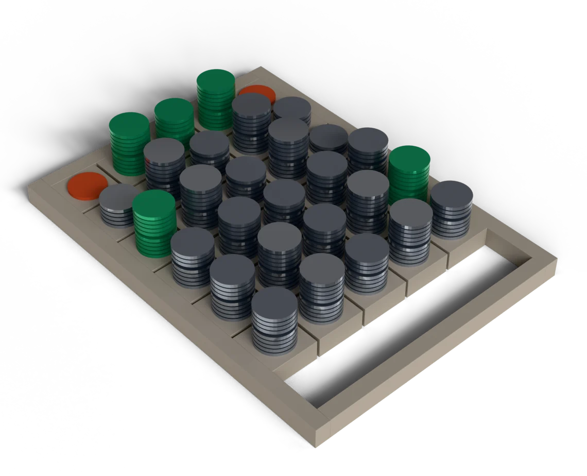
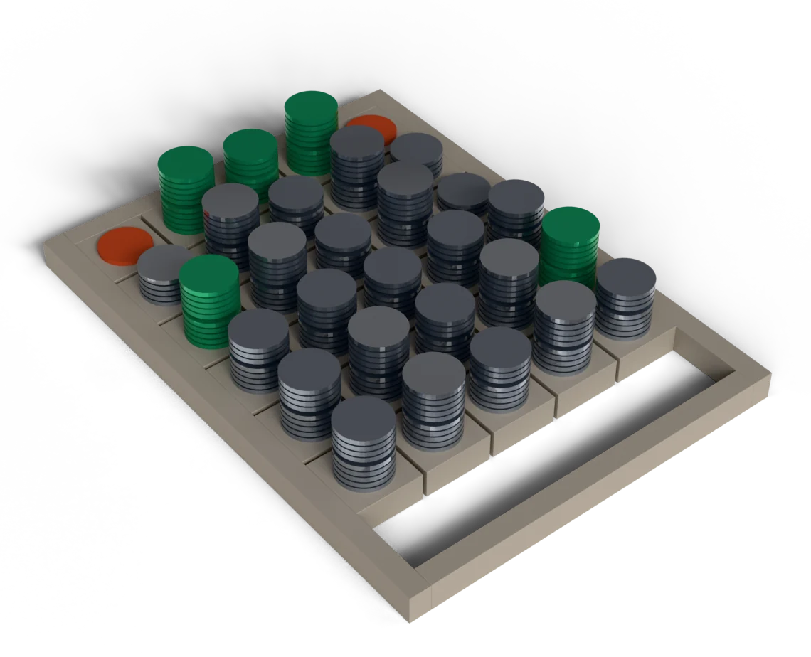
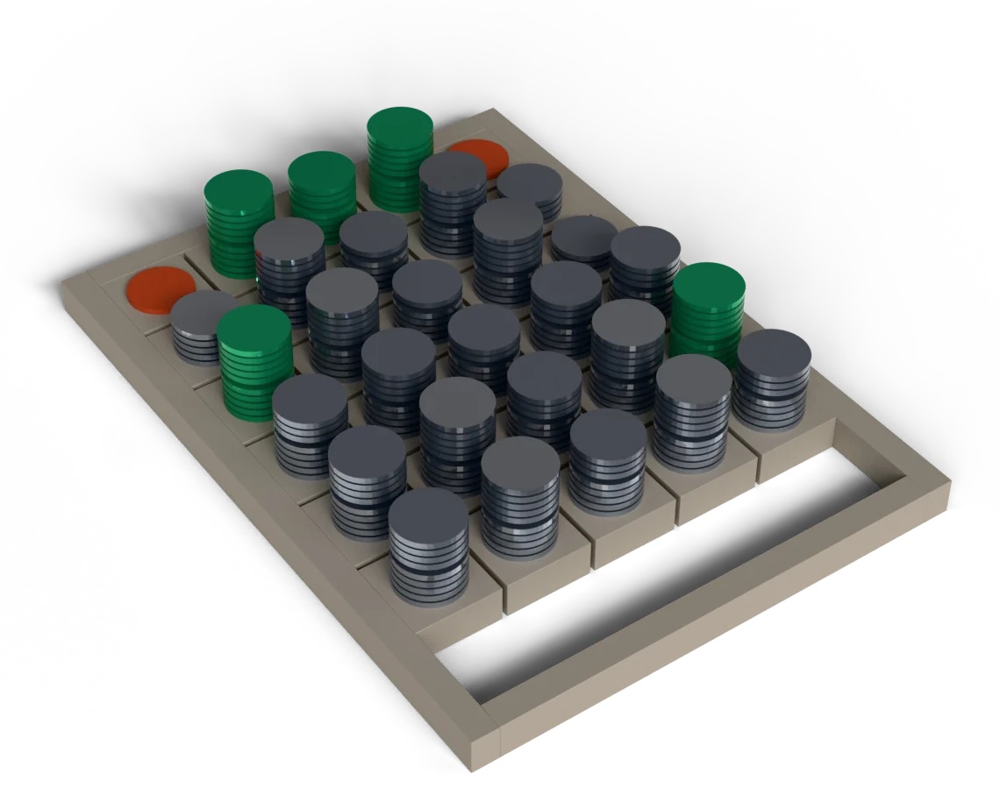
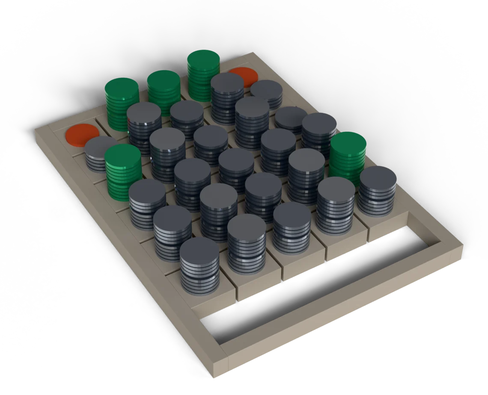
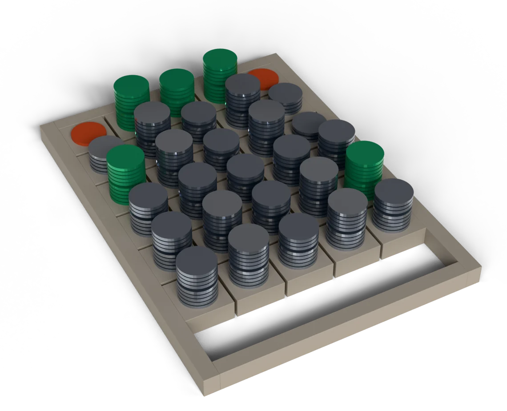
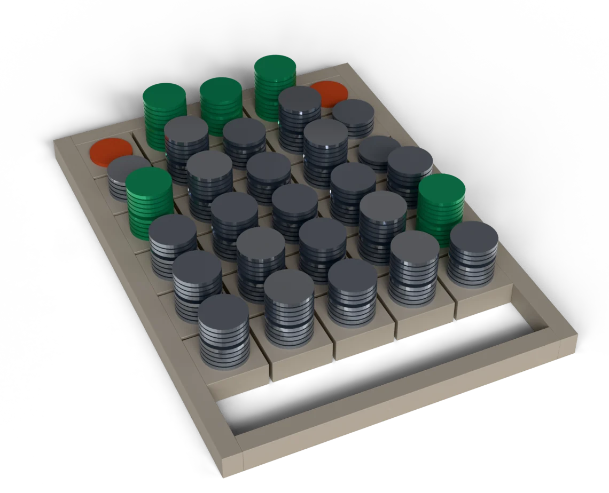
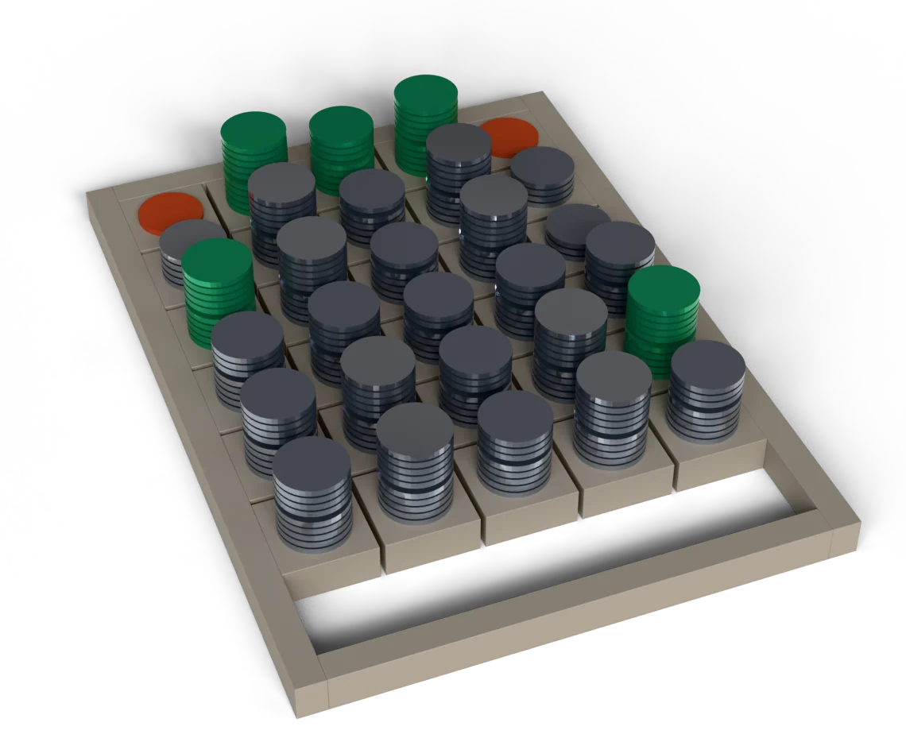
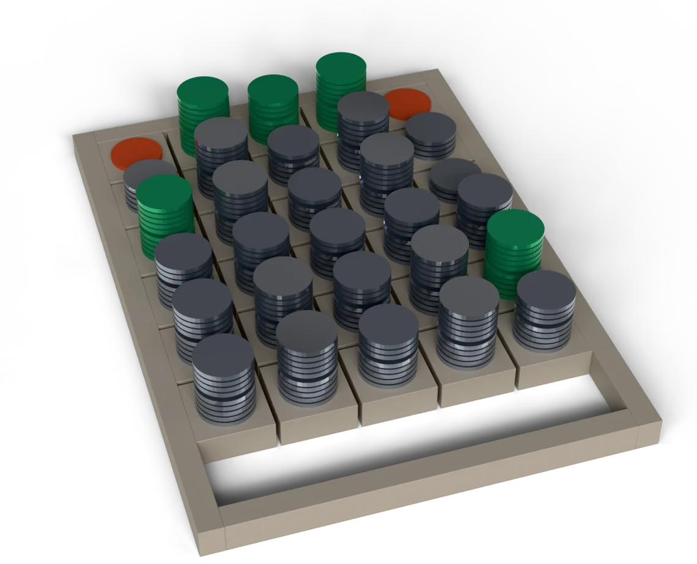
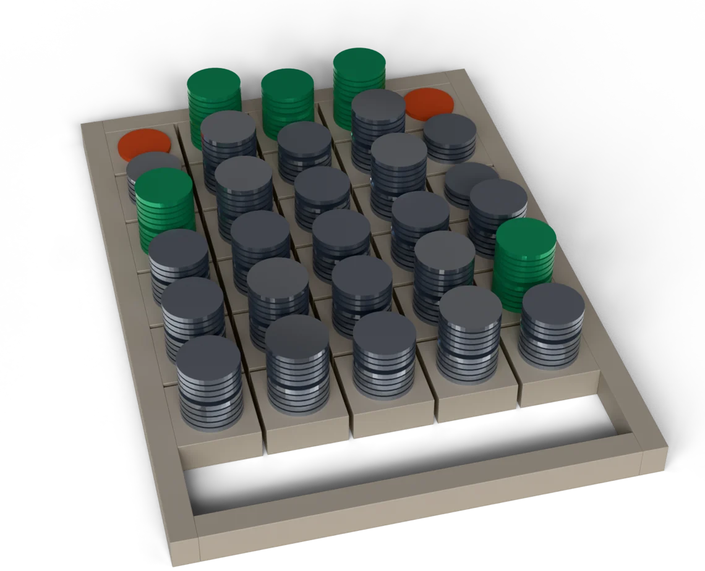

One stack per reader and per field, its height the accuracy we measured. The empty row is the human operator, who was never sampled field by field, so the plate leaves the row open rather than filling it.









94.4% is the number on your dashboard. 76.7% is the one on your desk: the share of files where all five fields are right together, 92 of 120.
| 94.4% | no interval | |
| 76.7% | Wilson 95% [68.3 to 83.3] | |
| Difference | 17.7 | points |
If nothing comes out cheaper without breaking a file, the report says so.